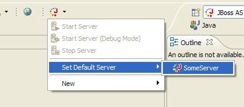
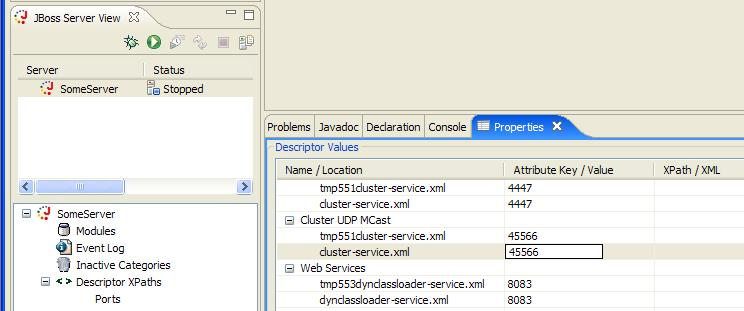
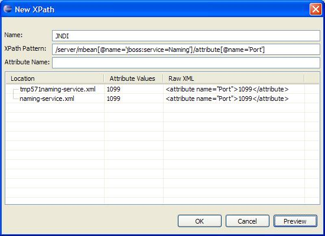
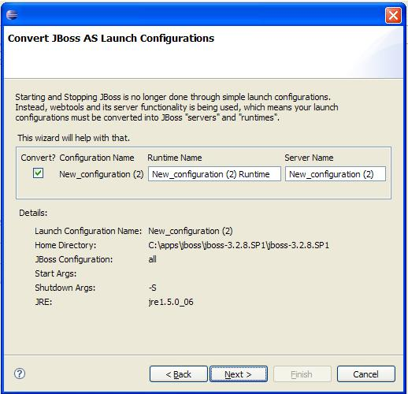

General |
|
|
Bugfixing |
Stability issues for starting and stopping which some users reported. |
|
Demos |
|
Toolbar Pulldown |
|
|
Starting and Stopping |
 You can start and stop servers once a default server has been designated. The actions will become enabled (no longer grey). Also, once designated, the server can be started in debug mode by simply clicking on the toolbar icon, rather than expanding the menu.
|
|
The New Item |
The pulldown also allows you shortcuts to create a new server or some MBean stubs (Interface, concrete class, and -service.xml)
|
XPath Editing |
|
|
In the Properties view |
 When Descriptor XPaths and a category for it are selected in the JBoss Servers View, the Properties View will allow you to edit the values of any declared xpaths. |
|
Declaring New XPaths |
 Here, you can name an xpath for easy reference in the view, and declare an xpath for it to relate to. The two parts here are XPath Pattern and Attribute Name. If the final piece you want to edit in the view is an attribute of an element, then the attribute name must go in the Attribute Name section. However if you want to edit the value of an element, in the above example the portion that reads 1099, then the attribute name remains blank. |
Upgrade Wizard |
|
|
From 1.6.x |
 Upgrading a workspace from eclipse launch configurations to the WTP server API is now handled automatically. You simply check which configurations you want to import and give their runtime and server a name, and that's all. |